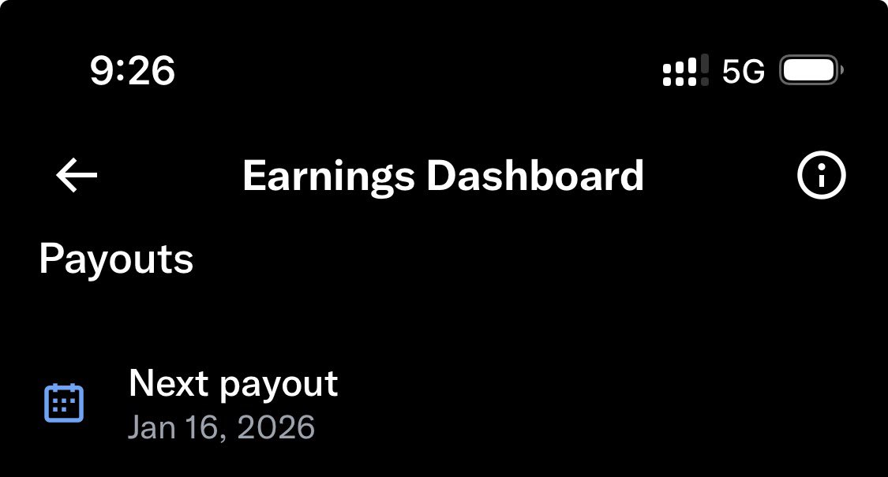

奶昔🥤
@realNyarime
我还是会选择把X当作朋友圈发，而不是去运营，即使我达到了盈利的门槛🥹
我很感激老马让我知道，原来发朋友圈也可以获得收入，真是给失业的我打了一针强心剂。不过都17号了… 为什么一点动静也没有？不过我似乎被限流了？
也无所谓，毕竟关注了就一定能看到，也非常感谢各位朋友的关注，其实不管能得到多少，有你们的互动，就够了。
我其实并不喜欢KOL式的发帖，只想分享更多干货以及自己亲身经历。
这也是我作为普通人的一个发声之地吧。哪天当国家机器的铁拳再打过来的时候，可能墙内没有我的立足之地，但我还有一块属于自己发声的地方。
爱你们，感谢您的光临😘
